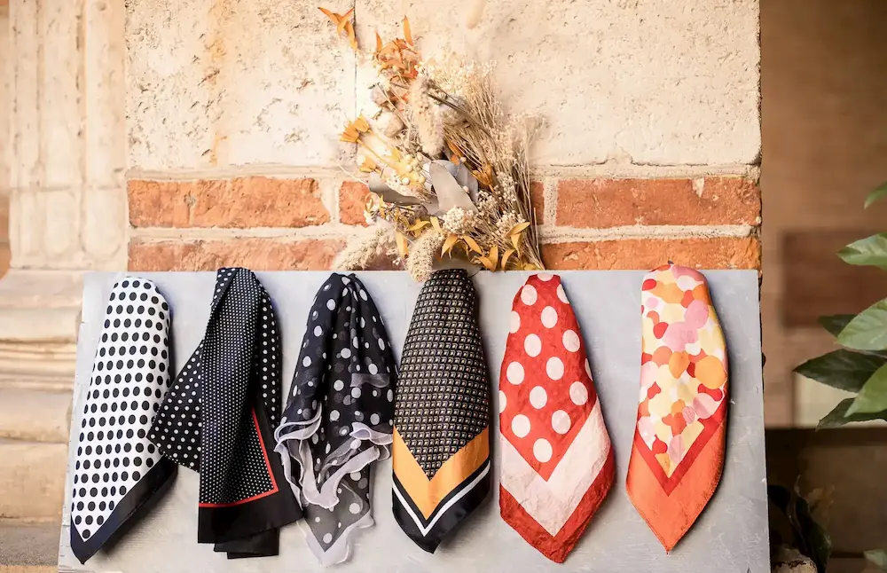

<section id="section-outfits">
  <div class="bg-gray-100">
    <div class="container mx-auto px-8 py-12 sm:py-24">
      <h2 class="section-title">
        <span>Tenues</span>
        
      </h2>
      <div
        class="section-content flex flex-col sm:flex-row space-y-6 items-center sm:space-x-9"
      >
        <div class="flex justify-center items-center">
          <p class="text-center">
            Je dispose d'un choix de tenues.<br /><br />
            Habituellement chaussée de mes Doc Martens, je serai toujours
            élégante en talons, derbies ou petites baskets lors de vos
            événements.
          </p>
        </div>
        
      </div>
    </div>
  </div>
</section>
